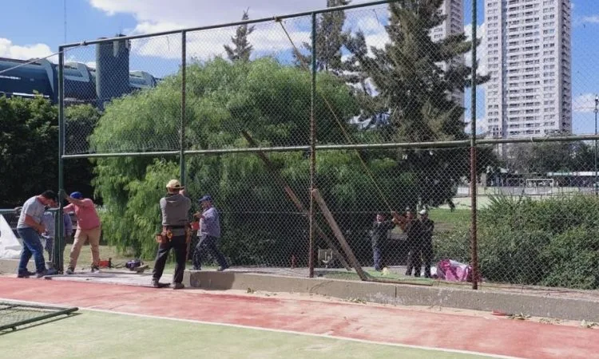
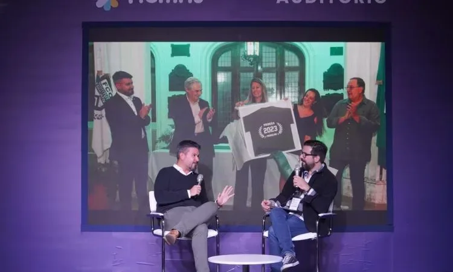
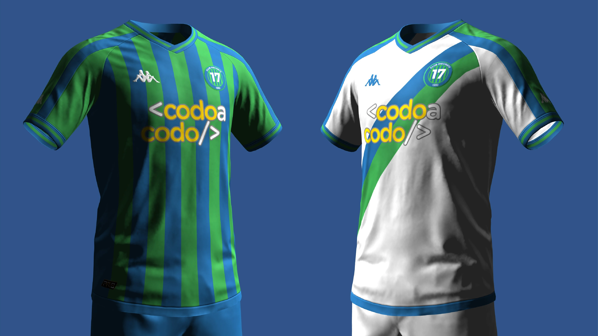
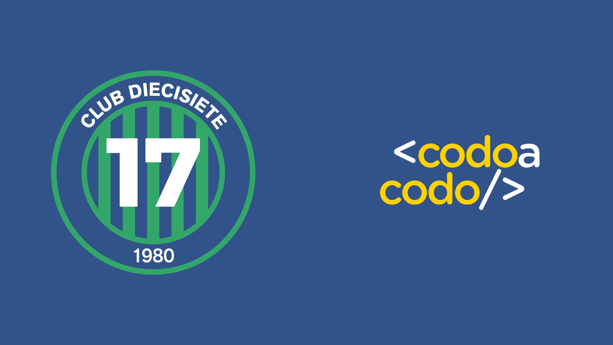

SECCIÓN INSTITUCIONAL
Trabajamos luego del temporal
24 de marzo, 2024
El Club Diecisiete avanza hacia su normal
funcionamiento mientras
continúan los trabajos necesarios para
solucionar los inconvenientes causados por el fuerte temporal.

Club Diecisiete renueva con sponsor técnico
19 de marzo, 2024
El Club Diecisiete renovo su sposor tecnico
hasta el año 2028.

“Queremos que nuestros deportistas puedan ser nuestros estudiantes
y viceversa”
15 de marzo, 2024
Nos visita el director del Instituto
Educativo Ferrocarril Oeste

Indumentaria 2024
7 de marzo, 2024
Kappa presento las camisetas titular y
suplentes para esta temporada.

Nuevo sponsor principal
7 de marzo, 2024
Club Diecisiete se asocia al programa Codo a
Codo
